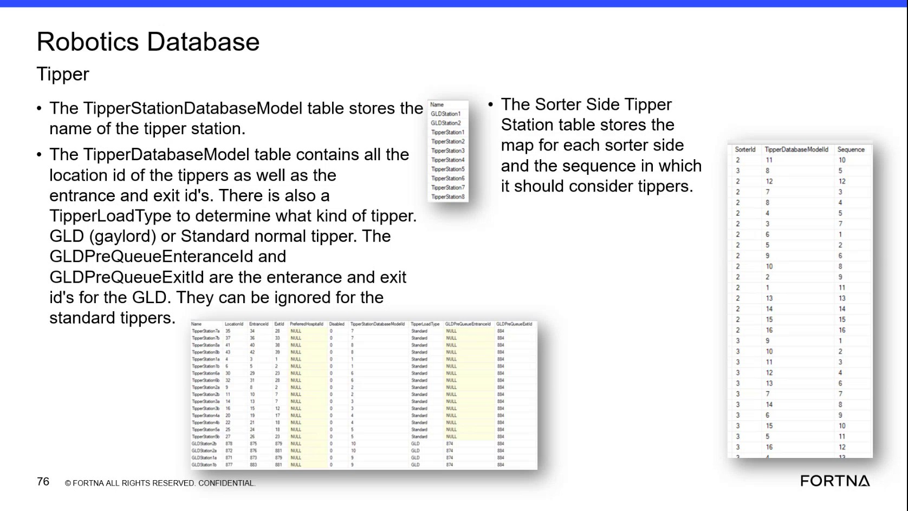

| Procedure ID | proc_sorter_side_charger_assignment_check_v1 |
|---|---|
| Title | Check Sorter-Side Charger Assignment in SSMS / Helix DB |
| Procedure Type | diagnostic |
| Primary Role | L2_support |
| Support Safe | Yes |
| Capability Tags | agv_charging_state, device_roster_state |
| Access Surface | wcs_sql |
| Audience Roles | L2_support, L3_support |
| Failure Pattern Tags | mapping_abnormal |
| Validation Status | needs_sme_review |
| Merge Status | source_finalized |
Use the WCS / Helix DB (SSMS) to inspect sorter-side and charger-assignment records. Confirm that the charger has a sorter-side model ID, that the charger is associated with the expected charging area or sorter side, and that its availability or disabled status is consistent with the investigation.
Use this read-only diagnostic when investigating whether a charger is assigned to the expected sorter side, whether the assignment is present, or whether charger availability or disabled status may explain charging behavior. Perform the inspection in the WCS / Helix DB (SSMS).

Responsible role: L2_support
Instruction:
In the WCS / Helix DB (SSMS), locate the sorter-side database model and the charging database model or charging-location records for the charger under investigation. Use the live model or record names available in the environment; the supplied source does not specify an exact database name, table name, or navigation path.
Expected result:
The relevant sorter-side and charger-related records are available for read-only inspection in SSMS.
Stop or Escalate If:
Responsible role: L2_support
Instruction:
In the WCS / Helix DB (SSMS), find the investigated charger or charging location. Inspect the sorter-side identifier or model ID associated with it, along with the charging area, charger location or station, tote stand association, and any available or disabled status shown in the live records.
Expected result:
The charger record shows a sorter-side identifier or model ID and identifies its related charging-area or charger configuration.
Stop or Escalate If:
Responsible role: L2_support
Instruction:
In the WCS / Helix DB (SSMS), compare the recorded sorter-side model ID and charger status with the expected sorter side for the charger. Confirm whether the charger is assigned to the expected side for normal charging. If the records describe cross-side use, identify whether another side's charger is available for emergency charging without changing the configuration.
Expected result:
The recorded assignment either maps the charger to the expected sorter side for normal charging or clearly identifies a configured cross-side available charger relationship for emergency use.
Stop or Escalate If: